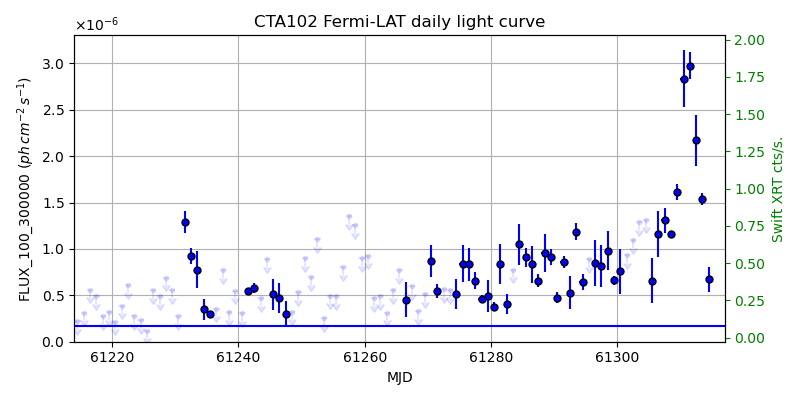
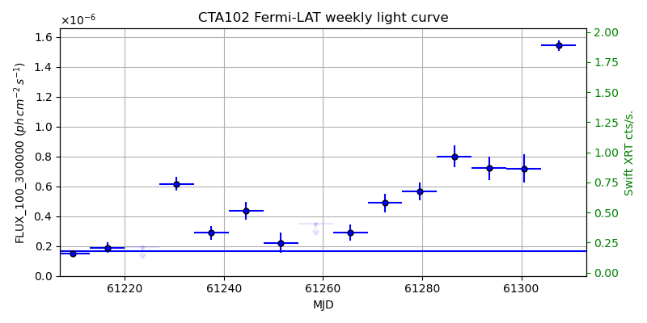
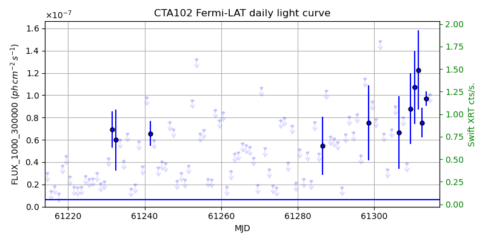
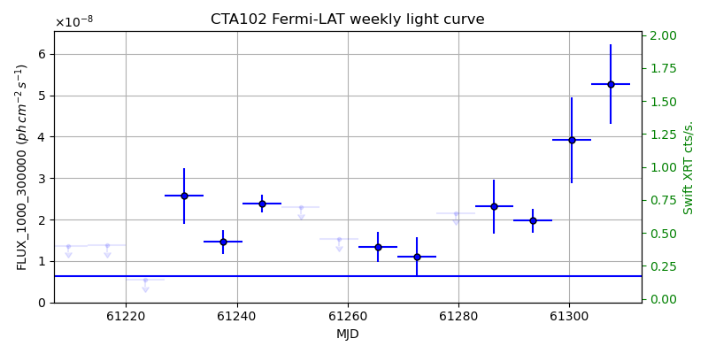

LAT Lightcurve site: https://fermi.gsfc.nasa.gov/ssc/data/access/lat/msl_lc/source/CTA_102
Swift site: https://www.swift.psu.edu/monitoring/source.php?source=CTA102
NED: Query
Time of last update of this page: UT: 2026-10-02 15:29 (MJD: 61315.646)
| Property | Value |
|---|---|
| R.A. | 22:32:36.48 |
| Dec. | 11:43:51.6 |
| z | 1.032 |
| 3FGL SpectrumType | LogParabola |
| 3FGL PL Index | |
| 3FGL Flux_100_300000 | 1.68e-07 1 / (s cm2) |
| 3FGL Flux_1000_300000 | 6.39e-09 1 / (s cm2) |
| 3FGL Flux >200 GeV | 3.94e-13 1 / (s cm2) |
| 3FGL Extrap. Crab >200 GeV | 0.00 |
| 3FGL Flux After EBL Absorption >200GeV | 7.20e-15 1 / (s cm2) |
| 3FGL EBL Crab Fraction >200GeV | 0.00 |

| MJD | dMJD | Flux | dFlux | Frac3FGL | FracCrab>200GeV | EBLFracCrab>200GeV |
|---|---|---|---|---|---|---|
| 61310.50 | 0.50 | 2.84e-06 | 3.09e-07 | 16.89 | 0.03 | 0.00 |
| 61311.50 | 0.50 | 2.98e-06 | 1.43e-07 | 17.72 | 0.03 | 0.00 |
| 61312.50 | 0.50 | 2.17e-06 | 2.78e-07 | 12.92 | 0.02 | 0.00 |
| 61313.50 | 0.50 | 1.53e-06 | 6.51e-08 | 9.13 | 0.02 | 0.00 |
| 61314.50 | 0.50 | 6.72e-07 | 1.33e-07 | 4.00 | 0.01 | 0.00 |

| MJD | dMJD | Flux | dFlux | Frac3FGL | FracCrab>200GeV | EBLFracCrab>200GeV |
|---|---|---|---|---|---|---|
| 61279.50 | 3.50 | 5.67e-07 | 6.13e-08 | 3.38 | 0.01 | 0.00 |
| 61286.50 | 3.50 | 8.02e-07 | 7.32e-08 | 4.77 | 0.01 | 0.00 |
| 61293.50 | 3.50 | 7.22e-07 | 7.72e-08 | 4.30 | 0.01 | 0.00 |
| 61300.50 | 3.50 | 7.19e-07 | 9.36e-08 | 4.28 | 0.01 | 0.00 |
| 61307.50 | 3.50 | 1.54e-06 | 3.50e-08 | 9.19 | 0.02 | 0.00 |

| MJD | dMJD | Flux | dFlux | Frac3FGL | FracCrab>200GeV | EBLFracCrab>200GeV |
|---|---|---|---|---|---|---|
| 61310.50 | 0.50 | 1.07e-07 | 3.27e-08 | 16.75 | 0.03 | 0.00 |
| 61311.50 | 0.50 | 1.23e-07 | 3.56e-08 | 19.19 | 0.03 | 0.00 |
| 61312.50 | 0.50 | 7.55e-08 | 1.32e-08 | 11.81 | 0.02 | 0.00 |
| 61313.50 | 0.50 | 9.70e-08 | 6.67e-09 | 15.17 | 0.03 | 0.00 |
| 61314.50 | 0.50 | 1.01e-07 | 0.00e+00 | 0.00 | 0.00 | 0.00 |

| MJD | dMJD | Flux | dFlux | Frac3FGL | FracCrab>200GeV | EBLFracCrab>200GeV |
|---|---|---|---|---|---|---|
| 61279.50 | 3.50 | 2.16e-08 | 0.00e+00 | 0.00 | 0.00 | 0.00 |
| 61286.50 | 3.50 | 2.31e-08 | 6.58e-09 | 3.62 | 0.01 | 0.00 |
| 61293.50 | 3.50 | 1.97e-08 | 2.93e-09 | 3.09 | 0.01 | 0.00 |
| 61300.50 | 3.50 | 3.92e-08 | 1.03e-08 | 6.13 | 0.01 | 0.00 |
| 61307.50 | 3.50 | 5.27e-08 | 9.62e-09 | 8.24 | 0.01 | 0.00 |
--------------------------------------------------------- Using user-supplied coords: 22:32:36.48 11:43:51.6 2000 --------------------------------------------------------- FLWO UT night of: 2026-10-03 Local Sid. @ Midnight: 00:24 Sunset (-15.0) (local, UT): 19:14 02:14 Sunrise (-15.0) (local, UT): 05:12 12:12 Moonrise (local, UT): 22:48 05:48 Moonset (local, UT): Moon phase: 0.53 --------------------------------------------------------- AzTime LSID UT Obj_el Obj_az Mn_el Mn_az Sep. --------------------------------------------------------- 19:14 19:37 02:14 44.9 105.8 -28.5 20.1 106.9 19:44 20:07 02:44 50.9 112.1 -26.2 26.7 107.3 20:14 20:37 03:14 56.7 119.9 -23.2 32.8 107.6 20:44 21:07 03:44 61.9 130.0 -19.6 38.5 108.0 21:14 21:37 04:14 66.3 143.6 -15.7 43.6 108.3 21:44 22:07 04:44 69.3 161.5 -11.3 48.4 108.6 22:14 22:37 05:14 70.2 182.7 -6.5 52.7 108.9 22:44 23:07 05:44 68.7 203.4 -0.8 56.7 109.2 23:14 23:37 06:14 65.3 220.2 3.8 60.4 109.5 23:44 00:07 06:44 60.7 232.8 9.1 63.9 109.8 00:14 00:38 07:14 55.3 242.3 14.6 67.1 110.1 00:44 01:08 07:44 49.4 249.6 20.3 70.2 110.3 01:14 01:38 08:14 43.3 255.6 26.1 73.1 110.6 01:44 02:08 08:44 37.1 260.6 32.1 76.0 110.8 02:14 02:38 09:14 30.7 265.1 38.1 78.8 111.0 02:44 03:08 09:44 24.3 269.2 44.2 81.7 111.2 03:14 03:38 10:14 17.9 273.1 50.3 84.8 111.4 03:44 04:08 10:44 11.6 276.9 56.5 88.1 111.6 04:14 04:38 11:14 5.4 280.8 62.7 91.9 111.8 04:44 05:08 11:44 -0.4 284.7 68.9 96.9 112.0 05:12 05:37 12:12 -6.8 288.5 74.7 103.8 112.1 --------------------------------------------------------- Dark hours >55 deg.: 2.72 srcstart (UT): 2026-10-03 03:04 srcend (UT): 2026-10-03 05:48